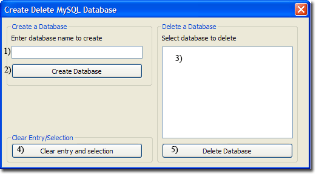
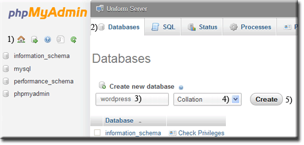
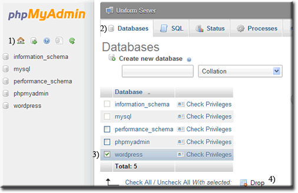

|
|
MySQL Create delete Database |
There are three methods for creating or deleting a database; you can use UniController, phpMyAdmin, or Server Command Console. UniTray provides a convenient menu option described bellow. To use this option ensure the MySQL server is running otherwise the button remains greyed out.
Create Delete Database using UniController
MySQL > Database create-delete
|
Create Database
Delete Database
Note 1: |
 |
Create Delete Database using phpMyAdmin
Start Controller and click phpMyAmin button. To create or delete a database proceed as follows:
Create Database
|
When first started, the phpMyAdmin home page is displayed. You can always return to this page by clicking the home icon (1)
|
 |
Delete Database
|
When first started, the phpMyAdmin home page is displayed. You can always return to this page by clicking the home icon (1)
|
 |
Create Delete Database using Server Console
Start the MySQL server, now open a command window by clciking the Server Console button. You can use either of the MySQL utilities, Client or Admin, to create and delete a database as follows:
MySQL utility - mysqladmin
Create a database
To create a database named joomla, enter the following command into the window:
mysqladmin.exe --host=127.0.0.1 --user=root --password=root create joomla
Delete a database
To delete a database named joomla, enter the following command into the window:
mysqladmin.exe --host=127.0.0.1 --user=root --password=root --force drop joomla
Note: You can specify the MySQL port to use:
mysqladmin.exe --host=127.0.0.1 --port=3306 --user=root --password=root create joomlamysqladmin.exe --host=127.0.0.1 --port=3306 --user=root --password=root --force drop joomla
MySQL utility - mysql Client
Note: Although the following uses the "Server Console" you can as an alternative use the MySQL Console
this saves having to type the first line (mysql -h127.0.0.1 -uroot -proot)
|
Create a database To create a database named wordpress, enter the following commands into the window:
|
C:\UniServerZ\core\mysql\bin>mysql -h127.0.0.1 -uroot -proot mysql> CREATE DATABASE wordpress; Query OK, 1 row affected (0.03 sec) mysql> exit Bye |
|
Delete a database To delete a database named wordpress, enter the following commands into the window:
|
C:\UniServerZ\core\mysql\bin>mysql -h127.0.0.1 -uroot -proot mysql> DROP DATABASE wordpress; Query OK, 0 rows affected (0.17 sec) mysql> exit Bye |
Note: If you have changed the MySQL root password, remember to substitute (-proot) root with your password in the above.
Related topics
MySQL Prompt
How to run a standard command window
MySQL prompt command window short cut